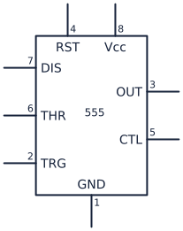
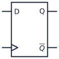
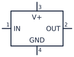
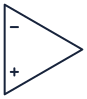
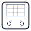
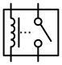
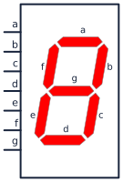

List of Electrical Circuit Symbols
The following alphabetical reference shows 100 common electrical and electronic circuit symbols.
555 timer

A 555 timer is used to generate delays, pulses, and oscillating signals.
AC current source
An AC current source supplies a current that periodically reverses direction.
AC voltage source
An AC voltage source supplies a voltage that periodically reverses polarity.
Ammeter
An ammeter is connected in series to measure electric current.
Analog meter
An analog meter uses a moving pointer to display an electrical measurement.
AND gate
An AND gate produces a high output only when all of its inputs are high.
Antenna
An antenna transmits or receives electromagnetic radio-frequency signals.
Audio jack
An audio jack provides a detachable connection for analog audio signals.
Battery
A battery supplies DC electrical energy from two or more cells.
Battery cell
A battery cell represents a single electrochemical source of DC voltage.
Bipolar transistor (NPN)
An NPN bipolar transistor is used for current-controlled switching and amplification.
Bipolar transistor (PNP)
A PNP bipolar transistor is used for high-side switching and current-controlled amplification.
Bridge rectifier
A bridge rectifier converts both halves of an AC waveform into pulsating DC.
Buffer gate
A buffer gate strengthens or isolates a digital signal without inverting it.
Bus connection
A bus connection shows a group of related conductors joining a circuit bus.
Capacitor
A capacitor stores electric charge and is used for filtering, timing, coupling, and energy storage.
Chassis ground
Chassis ground marks a connection to a device's conductive frame or enclosure.
Circuit breaker
A circuit breaker automatically opens a circuit during an overload and can be reset.
Coaxial connector
A coaxial connector joins a shielded cable while preserving its center conductor and outer shield.
Controlled current source
A controlled current source produces current determined by another circuit voltage or current.
Controlled voltage source
A controlled voltage source produces voltage determined by another circuit voltage or current.
Crystal
A crystal provides a highly stable resonant frequency for oscillators and clocks.
Current source
A current source supplies a specified current largely independent of its load voltage.
D flip-flop

A D flip-flop stores one bit by capturing its data input on a clock transition.
DC voltage source
A DC voltage source maintains a fixed-polarity potential difference.
DIAC
A DIAC conducts in either direction after its breakover voltage is reached and commonly triggers TRIACs.
Diode
A diode conducts primarily in one direction and is used for rectification and protection.
DIP switch
A DIP switch provides a compact bank of manual configuration switches.
DPDT switch
A double-pole double-throw switch changes two separate circuits between two paths.
DPST switch
A double-pole single-throw switch opens or closes two separate circuits together.
Earth ground
Earth ground marks a conductive connection to the physical earth for safety or reference.
Female connector
A female connector or jack accepts a mating plug to make a removable connection.
Fuse
A fuse melts and permanently opens a circuit when excessive current flows.
Galvanometer
A galvanometer detects or measures small electric currents with a sensitive moving coil.
Header connector
A header connector provides an organized row or grid of removable signal and power connections.
IGBT (N-channel)
An N-channel IGBT provides gate-controlled switching for high-voltage or high-current loads.
IGBT (P-channel)
A P-channel IGBT represents a complementary insulated-gate bipolar power switch.
Inductor
An inductor stores energy in a magnetic field and is used in filters and power converters.
Integrated circuit

An integrated-circuit symbol represents a packaged electronic function with multiple pins.
Inverter (NOT gate)
A NOT gate produces the opposite logical state from its input.
JFET (N-channel)
An N-channel JFET controls current through an N-type channel with a reverse-biased gate.
JFET (P-channel)
A P-channel JFET controls current through a P-type channel with a reverse-biased gate.
Junction
A junction dot marks conductors that are electrically connected at the same node.
Lamp
A lamp converts electrical energy into light and may also serve as an indicator or load.
LED
A light-emitting diode produces light when forward biased and is used for indication or illumination.
Microphone
A microphone converts sound into an electrical signal.
Motor
A motor converts electrical energy into rotational mechanical motion.
Multiplexer
A multiplexer selects one of several inputs and connects it to a single output.
NAND gate
A NAND gate produces a low output only when all of its inputs are high.
Neon lamp
A neon lamp glows when its gas ionizes and is commonly used as a high-voltage indicator.
NMOS transistor
An NMOS transistor is a voltage-controlled device widely used for low-side switching and digital logic.
No connection
A no-connection mark identifies a pin or wire end that is intentionally left unconnected.
NOR gate
A NOR gate produces a high output only when all of its inputs are low.
Operational amplifier

An operational amplifier amplifies the voltage difference between its two inputs.
Optocoupler
An optocoupler transfers a signal with light to provide electrical isolation.
Oscilloscope

An oscilloscope displays how an electrical signal changes over time.
Outlet
An outlet represents a mains receptacle that supplies power to a connected load.
Photodiode
A photodiode converts incident light into current and is used as a light sensor.
Photoresistor
A photoresistor changes resistance with light level and is used for simple light sensing.
Phototransistor (NPN)
An NPN phototransistor uses light to control collector current for sensitive optical detection.
Phototransistor (PNP)
A PNP phototransistor uses light to control a complementary transistor current path.
Plug
A plug is the male half of a removable electrical connector.
PMOS transistor
A PMOS transistor is a voltage-controlled device commonly used for high-side switching and CMOS logic.
Potentiometer
A potentiometer is an adjustable three-terminal resistor used as a voltage divider.
Pulse source
A pulse source produces timed voltage transitions for testing switching and digital circuits.
Push button (normally closed)
A normally closed push button opens its contacts only while it is pressed.
Push button (normally open)
A normally open push button closes its contacts only while it is pressed.
Reed switch
A reed switch changes state in response to a nearby magnetic field.
Relay

A relay uses an energized coil to operate electrically isolated switch contacts.
Resistor
A resistor limits current, divides voltage, and sets operating conditions in a circuit.
Rotary switch
A rotary switch selects one of several circuit connections by turning a shaft.
Sawtooth source
A sawtooth source generates a ramp waveform with a rapid return for timing and sweep circuits.
Schmitt trigger
A Schmitt trigger adds hysteresis so a noisy or slowly changing input becomes a clean digital signal.
Schottky diode
A Schottky diode provides fast switching and a low forward-voltage drop.
SCR
A silicon-controlled rectifier latches on after a gate trigger and controls high-power current.
Seven-segment display

A seven-segment display combines illuminated bars to show decimal digits.
Signal ground
Signal ground marks the common reference node used by low-level circuit signals.
Solar cell
A solar cell converts light energy directly into electrical energy.
Spark gap
A spark gap conducts across an air gap when the voltage exceeds its breakdown level.
SPDT switch
A single-pole double-throw switch connects one common terminal to either of two paths.
Speaker
A speaker converts an electrical audio signal into sound.
SPST switch
A single-pole single-throw switch simply opens or closes one circuit path.
Square-wave source
A square-wave source alternates sharply between two levels for clocks and switching tests.
Terminal
A terminal marks a designated point for connecting a wire, lead, or external circuit.
Thermistor
A thermistor changes resistance with temperature and is used for sensing or current limiting.
Transformer
A transformer transfers AC energy between windings for voltage conversion or isolation.
Tri-state buffer
A tri-state buffer can drive high, drive low, or disconnect its output electrically.
TRIAC
A TRIAC controls AC power by conducting in either direction after a gate trigger.
Tunnel diode
A tunnel diode uses negative differential resistance for very fast switching and oscillation.
Vacuum tube diode
A vacuum tube diode permits electron flow from a heated cathode to an anode for rectification.
Varactor diode
A varactor diode acts as a voltage-controlled capacitor in tuning and RF circuits.
Variable capacitor
A variable capacitor adjusts capacitance for tuning resonant and filter circuits.
Variable resistor
A variable resistor provides an adjustable resistance for calibration or control.
VDD supply
VDD marks the positive supply rail in MOS and digital circuits.
Voltmeter
A voltmeter is connected in parallel to measure potential difference.
VSS supply
VSS marks the lower or negative supply rail in MOS and digital circuits.
Wheatstone bridge
A Wheatstone bridge compares resistances and is used for precise sensing and measurement.
XNOR gate
An XNOR gate produces a high output when its inputs have the same logical state.
XOR gate
An XOR gate produces a high output when its inputs have different logical states.
Zener diode
A Zener diode maintains a nearly constant reverse voltage for regulation and protection.